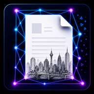

Scan. Shape. Correct.
Photograph a document, trace its real perimeter, flatten it, then polish the photographed pixels without rebuilding the contents.
🔒
Document Integrity Mode
No generated text. No guessed VINs. No rebuilt logos. Corrections stay tied to the original photographed pixels.
No generated text. No guessed VINs. No rebuilt logos. Corrections stay tied to the original photographed pixels.
Pinch to zoom. Tap a point for Move / Remove. Tap a line to add a point.
AI Assist is a non-generative polish pass. It may adjust lighting, colour and contrast, but it never recreates text, numbers, barcodes or logos.